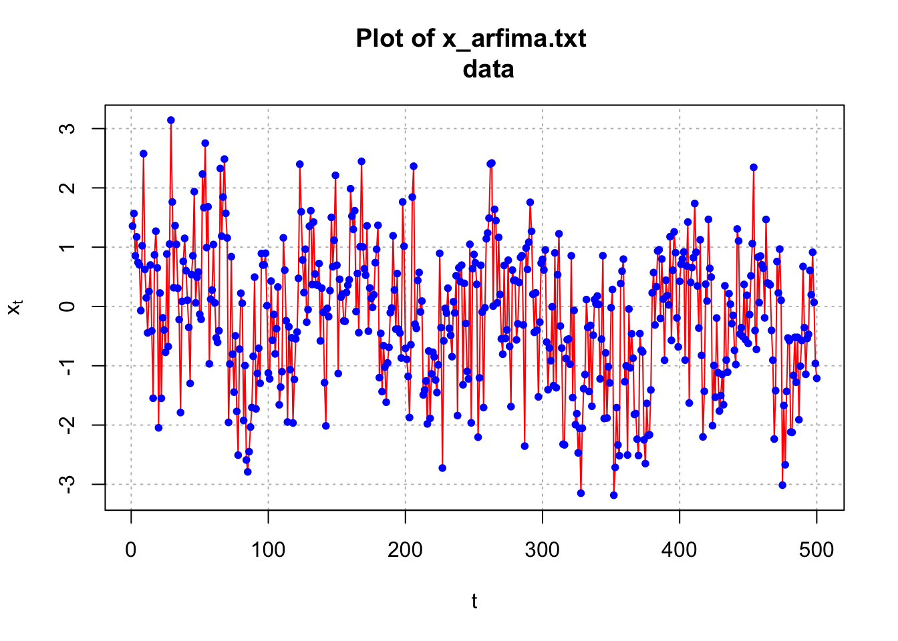
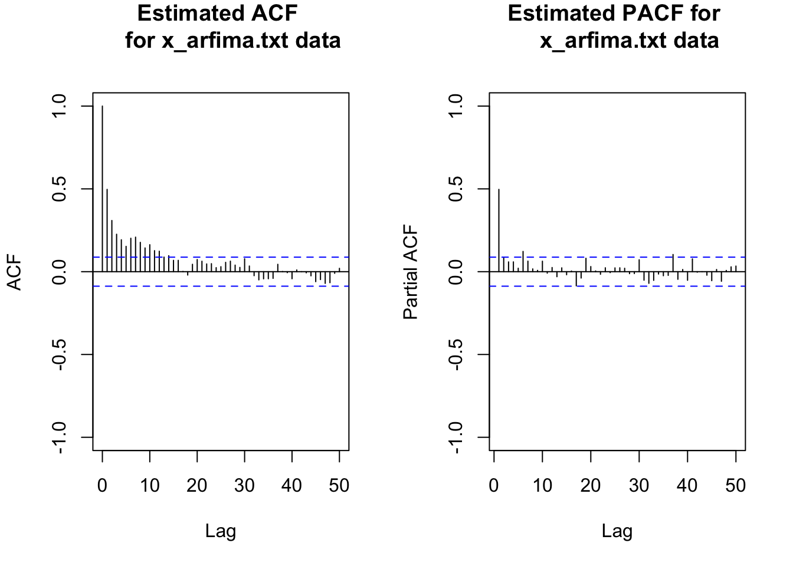
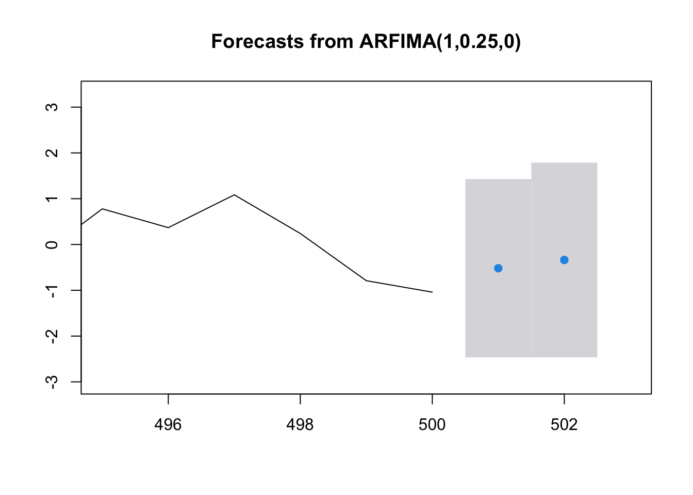
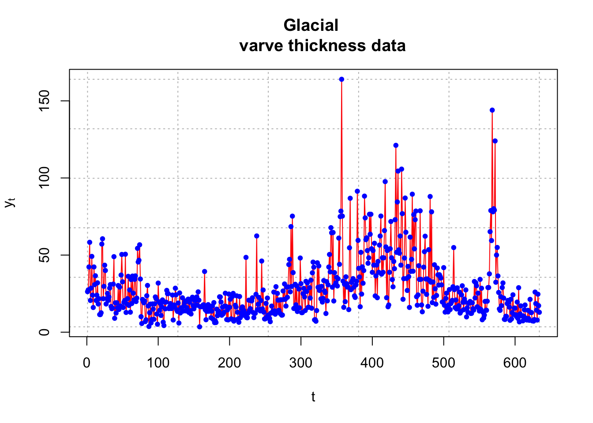
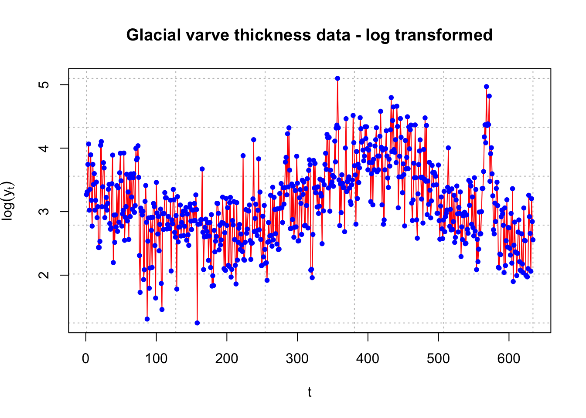
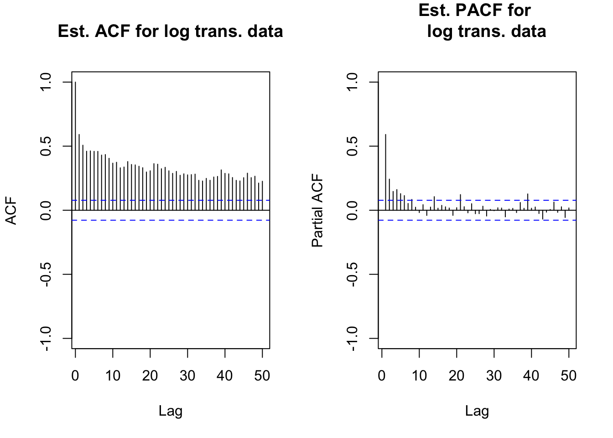
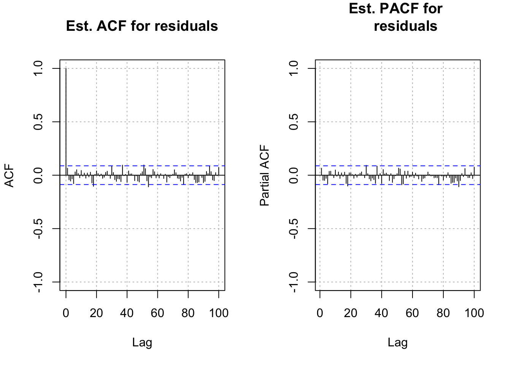
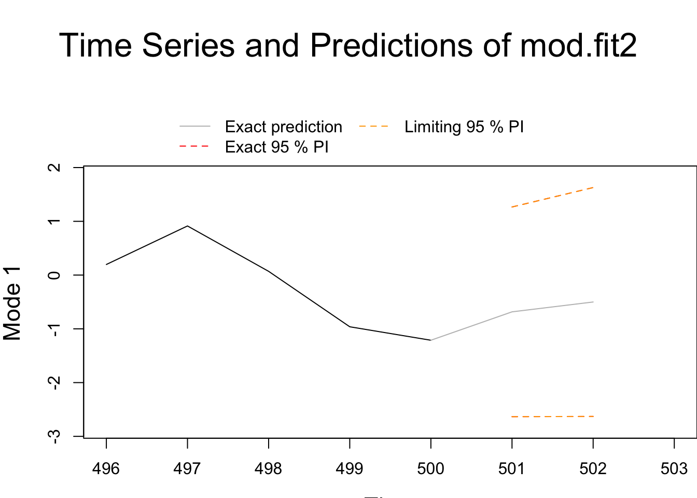

Chapter 19 ARFIMA
19.1 Introduction and Simulated Example
The purpose of this section is to give a brief account of long memory ARMA models. The “F” in ARFIMA stands for “fractional” with respect to differencing.
ARIMA(p,0,q)x(P,0,Q)\(_s\) is referred to as a “short memory” process because \(\rho(h)\to0\) “quickly” as \(h \to \infty\).
A long memory time series does not and has \(\rho(h)\to 0\) “slowly”.
In the past, we would have differenced a time series that exhibited these properties. There are cases where using \((1-B)^d\) for d = 1, 2, … may be too severe to fix the problem and result in “overdifferencing”. Note that overdifferencing may induce artificial patterns in the time series and reduce forecasting accuracy (see Pankratz’s textbook).
Long memory time series do not necessarily have “large” \(\rho(h)\). Instead, the \(\rho(h) \ne 0\) tend to persist for a long period of time. Some of the original examples where this type of data was examined include economics and hydrology applications from the 1980s. Newer examples include computer network traffic and meteorology.
As a compromise between differencing and not differencing a time series, fractional differencing can be done.
Use fractional powers of d between 0 to 0.5 for the differencing. The fractional difference series (p = 0, q = 0) can be represented as
\[(1-B)^dx_t=(\sum_{j=0}^{\infty}\pi_jB^j)x_t=\sum_{j=0}^{\infty}\pi_jx_{t-j}=w_t\]
where \(w_t\sim ind.(0, \sigma_w^2)\) and the \(\pi_j\)’s are found through a Taylor series expansion of \((1-B)^d\). Note that d now becomes a parameter to be estimated!
19.1.1 The \(\pi_j\)’s
Taylor series expansion in general for a function f(B):
\[f(B)=\sum_{j=0}^{\infty}\frac{f^{(j)}(a)}{j!}(B-a)^j\] where \(f^{(j)}(a)\) is the jth derivative of f(B) evaluated at a.
Using a Taylor series expansion about 0 leads to
\[(1-B)^d=\frac{(1-0)^d}{0!}(B-0)^0+\frac{-d(1-0)^{d-1}}{1!}(B-0)^1\\+\frac{d(d-1)(1-0)^{d-2}}{2!}(B-0)^2+...\\ =1+(-d)B+\frac{d(d-1)}{2}B^2+...\]
The general expression is \((1-B)^d-\sum_{j=0}^{\infty}\pi_jB^j\) where \(\pi_j=\frac{\Gamma(j-d)}{\Gamma(j+1)\Gamma(-d)}\)
Notes:
\(\Gamma(x+1)=x\Gamma(x)=x\int_{0}^{\infty}y^{x-1}e^{-y}dy\) for x>0 is the gamma function. Note that if x is an integer, this simplifies to \(\Gamma(x) = (x – 1)!\)
- How can I have \(\Gamma(-d)\) above???
- Notice the \(\Gamma(-d)\) will fall out; for example,
\[\pi_1=\frac{\Gamma(1-d)}{\Gamma(1+1)\Gamma(-d)}=\frac{-d\Gamma(-d)}{\Gamma(2)\Gamma(-d)}=-d\]
An equivalent recursive representation of \(\pi_j\) is
\[\pi_{j+1}=\frac{(j-d)\pi_j}{j+1}, \pi_0=1\]
One can try a few values of j to see it works out.
- It can be shown that \(x_t=\sum_{j=0}^{\infty}\psi_jw_{t-j}\) where \(\psi_j=\frac{\Gamma(j+d)}{\Gamma(j+1)\gamma(d)}\)
19.1.2 Finding estimatet of d:
Use an iterative root-finding procedure with \(Q(d) = \sum w_t^2(d)\). In other words, minimize the squared \(w_t\)’s (residuals) with respect to d. Iterative numerical method details are available in Shumway and Stoffer’s textbook.
19.1.3 Fractional ARIMA(p,d,q) or ARFIMA model
The model is \[\phi(B)(1-B)^d(x_t-\mu)=\theta(B)w_t\] for 0 < d < 0.5 and \(w_t\sim ind.(0, \sigma_w^2)\).
This model can be rewritten as \[\phi(B)\pi_d(B)(x_t-\mu)=\theta(B)w_t\] where \(\pi_d(B)=\sum_{j=0}^{\infty}\pi_jB^j\)
Notes:
A seasonal form of the model could also have been used above.
We have often just examined the \(\mu = 0\) form of an ARMA model. The way we have written the \(\mu \ne 0\) form of the model is \(\phi(B)x_t = \alpha + \theta(B)w_t\) where \(\alpha = \mu(1-\phi_1-\phi_2-…-\phi_p)\). Instead, one could also write the model as \(\phi(B)(x_t-\mu) = \theta(B)w_t\) so that the \(\\alpha\) term is not directly written in there. This is why the ARFIMA model is represented as above.
Let \(z_t=(1-B)^dx_t\). Thus \(x_t\) is passed through an infinite linear filter to form \(z_t\). We can then find an ARMA model for \(z_t\).
The \(w_t\)’s are still assumed to be independent \(N(0, \sigma_w^2 )\) random variables when estimating the model. This can be used the “usual” way for diagnostic methods.
Parameter estimation and forecasting can proceed using similar techniques as described earlier in the course!
The
fracdiffpackage in R provides the computational methods.
Example 19.1 ARFIMA(1,0.3,0) with \(\phi_1=0.2, \mu=0\) (arfima_sim.R)
To simulate data from an ARFIMA model, use the fracdiff.sim() function in R. Below is part of the code and output.
library(fracdiff)
set.seed(9101)
x.ex <- fracdiff.sim(n = 500, ar = 0.2, ma = NULL, d =0.3, rand.gen = rnorm, sd = 1, mu = 0)
names(x.ex)## [1] "series" "ar" "ma" "d" "mu" "n.start"x.ex$series[1:5]## [1] 0.2558553628 -0.2582559302 1.1313066446 0.0001357745 1.1763489841I had already simulated observations from the model in the past and put them in x_arfima.txt. This data was simulated using the same settings as above, but just using a different seed. I am going to use this data for the rest of the example. Below is the code needed to read in the data and plot the data.
arfima.sim.data <- read.table(file = "x_arfima.txt",
header = TRUE, sep = "")
head(arfima.sim.data)## x
## 1 1.3563372
## 2 1.5681298
## 3 0.8548125
## 4 1.1731924
## 5 0.7413035
## 6 0.7017789x <- arfima.sim.data$x
plot(x = x, ylab = expression(x[t]), xlab = "t", type =
"l", col = "red", lwd = 1, main = "Plot of x_arfima.txt
data", panel.first = grid(col ="gray", lty = "dotted"))
points(x = x, pch = 20, col = "blue")
par(mfrow = c(1,2))
acf(x = x, type = "correlation", main = "Estimated ACF
for x_arfima.txt data", ylim = c(-1,1), lag.max = 50)
pacf(x = x, lag.max = 50, main = "Estimated PACF for
x_arfima.txt data", ylim = c(-1,1))
par(mfrow = c(1,1))The ACF of the simulated data is tailing off very slowly – although the autocorrelations are not very large. This is a characteristic of a long-memory series. Note that this particular series has autocorrelations tailing off faster than most others that I have generated! Try the code yourself to see other examples of the ACF.
To fit a model to the data, the fracdiff() function can be used. The data should be first adjusted to make sure it has a 0 mean. Below is part of the code and output.
mean(x)## [1] -0.1712369x.adj <- x-mean(x) # adjust for meanmod.fit <- fracdiff(x=x.adj, nar=1)
# use nma = 1 for 1 MA if needed
mod.fit##
## Call:
## fracdiff(x = x.adj, nar = 1)
##
## Coefficients:
## d ar
## 0.2501425 0.1874089
## sigma[eps] = 0.9928298
## a list with components:
## [1] "log.likelihood" "n" "msg" "d"
## [5] "ar" "ma" "covariance.dpq" "fnormMin"
## [9] "sigma" "stderror.dpq" "correlation.dpq" "h"
## [13] "d.tol" "M" "hessian.dpq" "length.w"
## [17] "residuals" "fitted" "call"\(\hat d=0.2501\)
\(\hat \phi_1=0.1874\)
\(\hat \sigma_w=0.9928\)
summary(mod.fit)##
## Call:
## fracdiff(x = x.adj, nar = 1)
##
## Coefficients:
## Estimate Std. Error z value Pr(>|z|)
## d 0.250143 0.007397 33.816 < 2e-16 ***
## ar 0.187409 0.044551 4.207 2.59e-05 ***
## ---
## Signif. codes: 0 '***' 0.001 '**' 0.01 '*' 0.05 '.' 0.1 ' ' 1
## sigma[eps] = 0.9928298
## [d.tol = 0.0001221, M = 100, h = 7.45e-06]
## Log likelihood: -706.1 ==> AIC = 1418.169 [3 deg.freedom]\(\sqrt{\hat Var(\hat d)}=0.0073\)
\(z-statistics=\frac{\hat d}{\sqrt{\hat Var(\hat d)}}\)
# covariance matrix
vcov(mod.fit)## d ar1
## d 5.471676e-05 -5.890262e-05
## ar1 -5.890262e-05 1.984812e-03names(mod.fit)## [1] "log.likelihood" "n" "msg" "d"
## [5] "ar" "ma" "covariance.dpq" "fnormMin"
## [9] "sigma" "stderror.dpq" "correlation.dpq" "h"
## [13] "d.tol" "M" "hessian.dpq" "length.w"
## [17] "residuals" "fitted" "call"Notes:
- The estimated model is
\[(1 - 0.1875B)(1 - B)^{0.2501}(x_t + 0.1712) = w_t.\]
with \(\hat \sigma_w^2=0.9928298^2\). Notice how the mean is incorporated into the model.
- A test of \(H_0: \phi_1=0\) vs. \(H_a:\phi_1 \ne 0\) results in
\[Z=\frac{\hat \phi_1-\phi_1}{\sqrt{\hat Var(\hat \phi_1)}}=\frac{0.1875}{0.04455}=4.21\] Thus, there is sufficient evidence to show that \(\phi_1 \ne 0\).
Similarly, there is sufficient evidence to show d \(\ne\) 0.
Computational speed has improved since the 1980s when these models were developed! Haslett and Raftery’s 1989 paper discuss using a VAX computer to do the calculations. They say a “single evaluation of the likelihood takes 3 hours of CPU time on a VAX 11/780 and finding the MLE would take at least 45 hours.”
To speed up the computational process, Haslett and Raftery use an algorithm that omits M initial observations in the computations. This algorithm is implemented by
fracdiff()usingM = 100as the default. Page 13 of their paper provides some reasoning (approximations are made using the first 100 observations to help with the calculations using the remaining observations). With their algorithm, a single evaluation took 2.5 minutes.
How would you find \(\tilde x^{500}_{501}\)? Remember that an ARFIMA model can be written in general as
\[\phi(B)\pi_d(B)(x_t-\mu)=\theta(B)w_t\]
where \(\pi_d(B)=\sum_{j=0}^{\infty}\pi_jB^j\). For our model, let \(z_t=x_t-\mu\). Then
\[(1-0.1875B)(\sum_{j=0}^{\infty}\pi_jB^j)z_t=w_t\\ \iff (\sum_{j=0}^{\infty}\pi_jB^j)z_t-0.1875(\sum_{j=0}^{\infty}\pi_jB^j)z_{t-1}=w_t\\ \iff z_t=-(\sum_{j=1}^{\infty}\pi_jB^j)z_t+0.1875(\sum_{j=0}^{\infty}\pi_jB^j)z_{t-1}+w_t\\ \iff z_t=0.1875x_{t-1}-(\sum_{j=1}^{\infty}\pi_jB^j)(z_t-0.1875z_{t-1})+w_t\]
This leads to
\[E(z_{501} | I_{500})=E(w_{501}+0.1875z_{500}-\pi_1(z_{500}-0.1875z_{499})\\-\pi_2(z_{499}-0.1875z_{498})-...| I_{500})= \\0.1875z_{500}-\pi_1(z_{500}-0.1875z_{499})-\pi_2(z_{499}-0.1875z_{498})-...\]
The mean needs to be added to this as well because z is mean adjusted. Thus,
\(\tilde x^{500}_{501}=\mu+E(z_{501}| I_{500})\)
Unfortunately, the fracdiff package does not have a function available to find the forecasts. Below is code that can be used instead.
library(forecast)## Registered S3 method overwritten by 'quantmod':
## method from
## as.zoo.data.frame zoosave.fore <- forecast(object = mod.fit, h = 2, level = 95)
save.fore## Point Forecast Lo 95 Hi 95
## 501 -0.5184022 -2.465437 1.428633
## 502 -0.3372291 -2.462489 1.788030\(\tilde z^{500}_{501}=-0.5184\)
\(-2.47< \tilde z^{500}_{501}<1.43\)
\(-2.47+\hat \mu <\tilde x^{500}_{501} <1.43+\hat \mu\)
names(save.fore)## [1] "x" "mean" "upper" "lower" "level" "method"
## [7] "model" "series" "residuals" "fitted"save.fore$mean## Time Series:
## Start = 501
## End = 502
## Frequency = 1
## [1] -0.5184022 -0.3372291save.fore$mean+mean(x) # adjust back for mean## Time Series:
## Start = 501
## End = 502
## Frequency = 1
## [1] -0.6896391 -0.5084660# Recall you're using z=x-mean(x)save.fore$upper+mean(x) # adjust back for mean## Time Series:
## Start = 501
## End = 502
## Frequency = 1
## 95%
## [1,] 1.257396
## [2,] 1.616793save.fore$lower+mean(x) # adjust back for mean## Time Series:
## Start = 501
## End = 502
## Frequency = 1
## 95%
## [1,] -2.636674
## [2,] -2.633725plot(save.fore, xlim=c(495, 503))
19.2 Additional Example
Example 19.2 Varve data (varve_frac.R)
The purpose here is to duplicate and expand on the results in a corresponding example of Shumway and Stoffer.
Varves are sedimentary deposits from melting glaciers over the spring and summer seasons. The data used here is a measurement of the thickness from yearly deposits at one location in Massachusetts. There are 634 years of deposit measurements that start about 11,800 years ago.
Below is part of the code and output for the analysis.
library(astsa)##
## Attaching package: 'astsa'## The following object is masked from 'package:forecast':
##
## gasy <- varve
head(y)## Time Series:
## Start = 1
## End = 6
## Frequency = 1
## [1] 26.28 27.42 42.28 58.28 20.57 28.57plot(x = y, ylab = expression(y[t]), xlab = "t",
type = "l", col = "red", lwd = 1, main = "Glacial
varve thickness data", panel.first = grid(col = "gray",
lty = "dotted"))
points(x = y, pch = 20, col = "blue")
The log transformation is applied to deal with nonstationarity in the variance.
x <- log(y)
plot(x = x, ylab = expression(log(y[t])), xlab =
"t", type = "l", col = "red", lwd = 1, main =
"Glacial varve thickness data - log transformed",
panel.first = grid(col = "gray", lty = "dotted"))
points(x = x, pch = 20, col = "blue")
par(mfrow = c(1,2))
acf(x = x, lag.max = 50, type = "correlation",
main = "Est. ACF for log trans. data", xlim = c(1,50),
ylim = c(-1,1))
pacf(x = x, lag.max = 50, main = "Est. PACF for
log trans. data", xlim = c(1,50), ylim = c(-1,1))
par(mfrow = c(1,1))
# long memory exhibitedmean(x)## [1] 3.117993x.adj <- x-mean(x)library(fracdiff)
mod.fit <- fracdiff(x=x.adj)
summary(mod.fit)##
## Call:
## fracdiff(x = x.adj)
##
## Coefficients:
## Estimate Std. Error z value Pr(>|z|)
## d 3.705e-01 4.569e-06 81086 <2e-16 ***
## ---
## Signif. codes: 0 '***' 0.001 '**' 0.01 '*' 0.05 '.' 0.1 ' ' 1
## sigma[eps] = 0.4784262
## [d.tol = 0.0001221, M = 100, h = 4.571e-06]
## Log likelihood: -432.8 ==> AIC = 869.5471 [2 deg.freedom]- \(\hat d=3.705e-01\)
Notes:
- The ACF for xt is very slowly tailing off to 0.
- Notice that only d was estimated using
fracdiff().
- The estimated ARFIMA model is \((1-B)^{0.3705}(x_t-3.1179) = w_t\) using the default value of M. Shumway and Stoffer found d = 0.384 with M = 30. To be consistent with Shumway and Stoffer’s original approach, I decided to use M = 30 and d = 0.384 in the rest of the analysis.
- Next, I decided to find the \(\pi_j\)’s. Below is the code used and some of the resulting values.
pi.vec <- numeric(length(x.adj))
pi.vec[1] <- -mod.fit$d
w <- numeric(length(x.adj))
w[1] <- x.adj[1]
for(j in 2:(length(x.adj))) {
#Need to move subscript one back to match pi_j+1 equation
pi.vec[j] <- ((j-1-mod.fit$d)*pi.vec[j-1])/(j-1+1)
w[j] <- x.adj[j] + sum(pi.vec[1:(j-1)]
* rev(x.adj[1:(j - 1)]))
# Notice the use of rev()
}
pi.vec[1:5]## [1] -0.37046191 -0.11660994 -0.06334011 -0.04163881 -0.03022593To find the \(\pi_j\)’s, I used \(\pi_{j+1}=\frac{(j-d)\pi_j}{j+1}\) and \(\pi_0\) = 1. The values above do not quite match those of Shumway and Stoffer. Their values are likely incorrect because they obtain \(\pi_1\) = 0.3079, but j = 0 produces \(\pi_{0+1}=\frac{(0-d)\pi_0}{0+1}=-d\)
Thus, \(\pi_1=-d\), which should be 0.384.
- The residuals can be obtained using the
residuals()function. R does not automatically output the residuals.
head(residuals(mod.fit))## Time Series:
## Start = 1
## End = 6
## Frequency = 1
## [1] 0.1508147 0.1374081 0.5371316 0.6831467 -0.5366428 0.1065081tail(residuals(mod.fit))## Time Series:
## Start = 629
## End = 634
## Frequency = 1
## [1] 0.132948970 -0.135026061 -0.660507502 0.711401452 -0.001857311
## [6] -0.252491968Let’s do the programming to find the residuals on our own too! Remember that the model can be written as
\(\sum_{j=0}^{\infty}\pi_jx_{t-j}=w_t\iff\pi_0x_t+\pi_1x_{t-1}+\pi_2x_{t-2}+...=w_t\)
where \(x_t\) is already adjusted for the mean. The residuals are the \(w_t\)’s resulting from the model’s fit. Note that
\(x_1=w_1\)
\(x_2+\pi_1x_2=w_2\)
\(x_3+\pi_1x_2+\pi_2x_1=w_3\)
\(\vdots\)
\(x_{634}+\pi_1x_{633}+\pi_2x_{632}+...+\pi_{633}x_1=w_{634}\)
Below is a data frame containing the w’s
all <- data.frame(x.adj, w, pi.vec)
head(all)## x.adj w pi.vec
## 1 0.15081473 0.1508147 -0.37046191
## 2 0.19327921 0.1374081 -0.11660994
## 3 0.62632070 0.5371316 -0.06334011
## 4 0.94726552 0.6831467 -0.04163881
## 5 -0.09415976 -0.5366428 -0.03022593
## 6 0.23436375 0.1065081 -0.02332202tail(all)## x.adj w pi.vec
## 629 -0.19752367 0.132948970 -3.798538e-05
## 630 -0.46123656 -0.135026061 -3.790275e-05
## 631 -1.05620686 -0.660507502 -3.782043e-05
## 632 0.08597175 0.711401452 -3.773842e-05
## 633 -0.27424755 -0.001857311 -3.765671e-05
## 634 -0.56154165 -0.252491968 -3.757531e-05These match what was obtained by residuals().
- Next are the residual ACF and PACF plots. The plot resembles an ACF plot from a white noise process. Remember that \(\alpha\) = 0.05 here for each lag so it is not surprising to see a few values a little outside of the dashed lines.
w <- residuals(mod.fit)
par(mfrow = c(1,2))
acf(x = w, lag.max = 100, type = "correlation", main =
"Est. ACF for residuals", ylim = c(-1,1), panel.first =
grid(col = "gray", lty = "dotted"))
pacf(x = w, lag.max = 100, main = "Est. PACF for
residuals", ylim = c(-1,1), panel.first =
grid(col = "gray", lty = "dotted"))par(mfrow = c(1,1))- How would you find \(\tilde x^{634}_{635}\)?
\(E(x_{635}|I_{634})=E(w_{635}-\pi_1x_{634}-\pi_{634}x_1-...|I_{634})=-\pi_1x_{634}-\pi_{634}x_1-...\)
The mean needs to be added to this as well because x is mean adjusted. Also, we will need to put the forecasts back on the \(y_t\) scale.
Forecasts in R:
library(forecast)
save.fore <- forecast(object = mod.fit, h = 2, level = 95)
save.fore## Point Forecast Lo 95 Hi 95
## 635 -0.4082066 -1.347075 0.5306615
## 636 -0.3764717 -1.377695 0.6247518- \(\tilde z^{634}_{635}=-0.4082\)
# Need to mean adjust
fore.df <- data.frame(forecast = save.fore$mean +
mean(x),
low = as.numeric(save.fore$lower + mean(x)),
up = as.numeric(save.fore$upper + mean(x)))
# as.numeric() was needed to remove a label
fore.df## forecast low up
## 1 2.709787 1.770919 3.648655
## 2 2.741522 1.740298 3.742745# Need to account for log transform
exp(fore.df)## forecast low up
## 1 15.02607 5.876250 38.42295
## 2 15.51057 5.699043 42.21372What would be the purpose of the forecasts here? Maybe a model like this would be helpful for current glaciers to understand varves.
- Shumway and Stoffer also examine regular ARIMA models for this data and suggest an ARIMA(1,1,1) model for the data. Later in the textbook they perform a “unit root test” to determine if d = 1. They conclude “no” and that the ARFIMA approach is better. Please see their textbook for the examples.
\(H_0:\phi_1=1\)
\(H_1:\phi_1\ne 1\)
Example 19.3 ARFIMA(1, 0.3, 0) with \(\phi_1=0.2, \mu=0\) (arfima_sim.R)
What if you did not know what the model was to begin with? I have not found any reference to “model building” strategies, but here is how I would proceed.
- Find the estimated ACF and check to see if it has the characteristics of a long-memory series.
- If it looks like a long-memory series, find an initial estimate of d using
fracdiff().
- Find residuals from the model fit. Use the regular ARIMA model building methods to find estimates of \(\phi\)’s and \(\theta\)’s. Use
fracdiff()to fit the models and update the estimate of d.
Following the above procedure, I fit an ARFIMA(0,d,0) model to the data, found the residuals, and then constructed an ACF plot of the residuals.
arfima.sim.data <- read.table(file = "x_arfima.txt", header = TRUE, sep = "")
x <- arfima.sim.data$x
mean(x)## [1] -0.1712369x.adj <- x - mean(x) # adjust for mean
mod.fit <- fracdiff(x=x.adj)
summary(mod.fit)##
## Call:
## fracdiff(x = x.adj)
##
## Coefficients:
## Estimate Std. Error z value Pr(>|z|)
## d 3.760e-01 7.474e-06 50309 <2e-16 ***
## ---
## Signif. codes: 0 '***' 0.001 '**' 0.01 '*' 0.05 '.' 0.1 ' ' 1
## sigma[eps] = 0.997149
## [d.tol = 0.0001221, M = 100, h = 7.477e-06]
## Log likelihood: -708.7 ==> AIC = 1421.316 [2 deg.freedom]- \(\hat d=3.760e-01\)
w <- residuals(mod.fit)
par(mfrow = c(1,2))
acf(x = w, lag.max = 100, type = "correlation", main =
"Est. ACF for residuals", ylim = c(-1,1),
panel.first = grid(col = "gray", lty = "dotted"))
pacf(x = w, lag.max = 100, main = "Est. PACF for
residuals", ylim = c(-1,1), panel.first = grid(col
= "gray", lty = "dotted"))
par(mfrow = c(1,1))The residual ACF and PACF look like the ACF and PACF from a white noise series. I was hoping that it would look like the ACF and PACF from an AR(1) process. This may have occurred due to the choice of a “small” \(\phi_1\) value.
Suppose I wanted to find the residuals from the fit of an ARFIMA(1,d,0) model.
\((1-B\phi_1)(1-B)^dx_t=w_t\\ \iff (1-B\phi_1)(x_t+\pi_1x_{t-1}+\pi_2x_{t-2}+...)=w_t\\ \iff x_t+\pi_1x_{t-1}+\pi_2x_{t-2}+...-\phi_1x_{t-1}-\phi_1\pi_1x_{t-2}-\phi_1\pi_2x_{t-3}-...=w_t\)
Thus,
\[x_1=w_1\\ x2+\pi_1x_1-\phi_1x_1=w_2\\ x_3+\pi_1x_2+\pi_2x_1-\phi_1x_2-\phi_1\pi_1x_1=w_3\\ x_4+\pi_1x-3+\pi_2x_2+\pi_3x_1-\phi_1x_3-\phi_1\pi_1x_2-\phi_1\pi_2x_1=w_4\\ \vdots\\ x_{500}+\pi_1x_{499}+\pi_2x_{498}+...+\pi_{499}x_1-...-\phi_1x_{499}-\phi_1\pi_1x_{498}-...-\phi_1\pi_{498}x_1=w_{500}\]
Below is the code used to find the residuals with this model. Also, residual ACF and PACF plots are produced.
mod.fit <- fracdiff(x = x.adj, nar = 1)
summary(mod.fit)##
## Call:
## fracdiff(x = x.adj, nar = 1)
##
## Coefficients:
## Estimate Std. Error z value Pr(>|z|)
## d 0.250143 0.007397 33.816 < 2e-16 ***
## ar 0.187409 0.044551 4.207 2.59e-05 ***
## ---
## Signif. codes: 0 '***' 0.001 '**' 0.01 '*' 0.05 '.' 0.1 ' ' 1
## sigma[eps] = 0.9928298
## [d.tol = 0.0001221, M = 100, h = 7.45e-06]
## Log likelihood: -706.1 ==> AIC = 1418.169 [3 deg.freedom]w <- residuals(mod.fit)
par(mfrow=c(1,2))
acf(x = w, lag.max = 100, type = "correlation", main =
"Est. ACF for residuals", ylim = c(-1,1), panel.first =
grid(col = "gray", lty = "dotted"))
pacf(x = w, lag.max = 100, main = "Est. PACF for
residuals", ylim = c(-1,1), panel.first = grid(col
= "gray", lty = "dotted"))par(mfrow = c(1,1))Again, the residual ACF and PACF plots look similar to the same plots from a white noise process.
Examine the AIC to choose between the models. The AIC for the model that includes \(\phi_1\) is a little lower.
Final notes:
- If a good estimate for d can be found, then \((1-B)^dx_t\) can be found. An ARMA could be built upon this series using
arima()andtsdiag(). I have not tried this and I do not know how well this would work.
- The
arfimapackage can also estimate ARFIMA models. Below is output associated with the ARFIMA(1,0.3,0) model example
library(arfima)## Loading required package: ltsa## Note that the arfima package has new defaults starting with
## 1.4-0: type arfimachanges() for a list, as well as some other notes.
## NOTE: some of these are quite important!##
## Attaching package: 'arfima'## The following object is masked from 'package:forecast':
##
## arfima## The following object is masked from 'package:stats':
##
## BICmod.fit2 <- arfima::arfima(z = x, order = c(1, 0, 0))## Note: only one starting point. Only one mode can be found -- this is now the default behavior.
## Beginning the fits with 1 starting values.summary(mod.fit2)##
## Call:
##
## arfima::arfima(z = x, order = c(1, 0, 0))
##
##
## Mode 1 Coefficients:
## Estimate Std. Error Th. Std. Err. z-value Pr(>|z|)
## phi(1) 0.1860171 0.0838391 0.0828130 2.21874 0.0265046 *
## d.f 0.2513300 0.0664605 0.0657191 3.78164 0.0001558 ***
## Fitted mean -0.1457951 0.2662330 NA -0.54762 0.5839513
## ---
## Signif. codes: 0 '***' 0.001 '**' 0.01 '*' 0.05 '.' 0.1 ' ' 1
## sigma^2 estimated as 0.990203; Log-likelihood = 3.61017; AIC = 0.779664; BIC = 17.6381
##
## Numerical Correlations of Coefficients:
## phi(1) d.f Fitted mean
## phi(1) 1.00 -0.85 -0.03
## d.f -0.85 1.00 0.03
## Fitted mean -0.03 0.03 1.00
##
## Theoretical Correlations of Coefficients:
## phi(1) d.f
## phi(1) 1.00 -0.85
## d.f -0.85 1.00
##
## Expected Fisher Information Matrix of Coefficients:
## phi(1) d.f
## phi(1) 1.04 1.11
## d.f 1.11 1.64\(\hat \phi=0.1860\)
\(\hat d=0.2513\)
The model is essentially the same as before. The largest difference is the estimate of \(\mu\) is done within the function (Fitted mean =-0.1457951) and it is a little more than what we obtained previously (mean(x)=-0.1712369).
Forecasts:
save.pred2 <- predict(object = mod.fit2, n.ahead = 2, predint = 0.95)
save.pred2## $`Mode 1`
## $`Mode 1`$`Forecasts and SDs`
## 1 2
## Forecasts -0.683843 -0.500583
## Exact SD 0.995152 1.086213
## Limiting SD 0.995090 1.086095names(save.pred2)## [1] "" "z" "limiting" "predint" "name" "m"save.pred2$"" ## NULL# Oddly, the first component in the list does not have a name!save.pred2[[1]] # So, access by number## $SDForecasts
## 1 2
## 500 0.9951524 1.086213
##
## $Forecast
## 1 2
## -0.6838431 -0.5005828
##
## $exactVar
## [1] 0.9903282 1.1798597
##
## $exactSD
## [1] 0.9951524 1.0862135
##
## $limitVar
## [1] 0.9902033 1.1796020
##
## $limitSD
## [1] 0.9950896 1.0860948
##
## $sigma2
## [1] 0.9902033low <- save.pred2[[1]]$Forecast - qnorm(p = 0.975, mean
= 0, sd = 1) * save.pred2[[1]]$limitSD
up <- save.pred2[[1]]$Forecast + qnorm(p = 0.975, mean =
0, sd = 1) * save.pred2[[1]]$limitSD
data.frame(low, up)## low up
## 1 -2.634183 1.266497
## 2 -2.629290 1.628124There are some small differences in comparison to fracdiff.
plot(x=save.pred2)
Why didn’t we focus on this package?
- The fracdiff package is more established. It has been around since at least 1999 in R and available with S-Plus prior to it.
- I recognize some of fracdiff’s authors as leaders in time series analysis.
Both packages could use improvements.